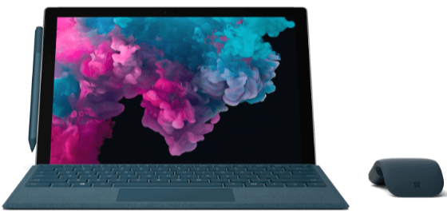
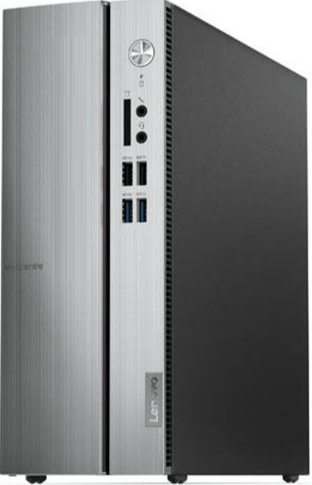
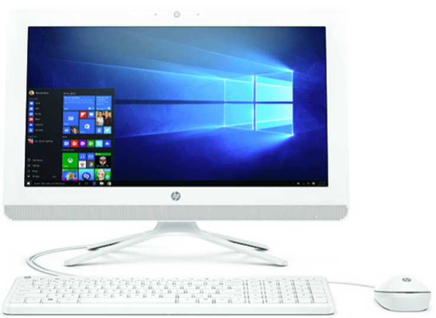

VENTAS
Portátiles
Convertible 2 en 1 - Microsoft Surface Pro 6, 12.3", Intel® Core i5-8250U, 8 GB RAM, 128 GB SSD, W10
Pantalla
Resolución:
2736 x 1824 píxeles
Pantalla táctil: Sí
Tipo de pantalla: 12.3" PixelSense Táctil
Número de artículo: 1442912
Memoria RAM
Procesador
Procesador:Intel® Core™ i5-8250U
Marca del Procesador:Intel® Core I5
Modelo Procesador:Core i5
Número Procesador:i5-8250U
Tarjeta gráfica:Intel HD Graphics 620
Disco duro
Tipo 1 de disco duro:SSD
Capacidad 1. Disco duro:128 GB
Conectividad
Conexiones:
USB 3.0 de tamaño completo;
Lector de tarjetas microSDXC;
Surface Connect;
Conector para auriculares de 3,5 mm;
Mini DisplayPort;
Puerto para funda
Versión Bluetooth:4.1
Equipo
Sistema operativo:Windows 10 Home
Software incluido:Prueba de Office 365 de 30 días
Micrófono:Sí
Tarjeta memoria:MicroSD
Caract. especiales:Windows Hello
Cámara
Resolución grabación cámara:Sí
Cámara trasera/frontal:8 Mpx / 5 Mpx
Características generales
Dimensiones / Peso:- / 770g
Tipo:Convertible
Color:Platino
Peso:770g
Ordenadores De Mesa
PC Sobremesa - Lenovo Ideacentre 510S-07ICB, Intel Core i3-7100, 8 GB RAM, 1 TB, W10
Procesador
Procesador:Intel® Core™ i3-7100
Número Procesador:i3-7100
Modelo Procesador:Core i3
Memoria RAM
Tipo de RAM:DDR4
Tamaño memoria RAM:8 GB
Tarjeta gráfica
Tarjeta gráfica:Intel UHD Graphics 630
Disco duro
Disco duro 1:HDD , 1 TB
Placa principal
Chipset:Intel B360
Unidad óptica:no
Conectividad
Versión Bluetooth:4.0
Wi-Fi:802.11ac
Equipo
Sistema operativo:Windows 10 Home
Características generales
Tipo:Ordenador sobremesa
All In One
All in One - 20-c403ns, 19,5" FHD, Intel® Celeron® J4005, 4GB RAM, 1 TB, W10, Blanco nieve
Procesador
Velocidad Procesador:2 GHz
Vel. turbo procesador:2.7 GHz
Marca del Procesador:Intel® Celeron®
Numero Procesador:J4005
Número de Nucleos:2
Tamaño de caché:4 MB
Número de artículo:1452774
Memoria RAM
Pantalla
Tamaño pantalla (cm/pulg):- / 19.5 "
Tipo de pantalla:19.5" WLED Full HD VA
Retroiluminación LED:Sí
Calidad de imagen:Full-HD
Tamaño pantalla (pulgadas):19.5 "
Resolución:1920 x 1080
Tarjeta gráfica
Tarjeta gráfica:Intel® UHD 600
Fabricante Tarjeta Grafica:Intel®
Placa principal
Chipset:Intel® H370
Conectividad
Bluetooth:Sí
Versión Bluetooth:4.2
Wi-Fi:802.11a/b/g/n/ac
Conexiones:2 USB 2.0 / 2 USB 3.0 / HDMI / Lector tarjetas memoria 3 en 1
Wi-Fi:Sí
Altavoces integrados:Sí
Sonido
Altavoces:2
Potencia altavoces:2 W
Número de Altavoces:2
Equipo
Sistema operativo:Windows 10 Home 64
Webcam:Sí
Micrófono:Sí
Teclado:Teclado con cable USB para Windows 8
Características generales
Tipo:All in one
Medidas (An x Al x F):37 cm x 18.40 cm x 49.50 cm
Color:Blanco nieve
Anchura:37 cm
Altura:18.40 cm
Profundidad:49.50 cm
Peso:4.4 Kg
Tamaño embalaje (An x Al x F) (cm):48.90 cm / 23.30 cm / 60 cm
Girth:204.4 cm
Peso embalado:6.50 kg